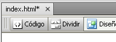

Guía de aprendizaje
Dreamweaver CS4
Tutorial 1. Crear una página web para alquilar un apartamento
Desarrollo del tutorial: paso 15 de 17
Ahora estamos en condiciones de ver nuestra página en un navegador.
En la pestaña donde aparece el nombre del archivo, podemos ver que tiene un asterisco a su derecha.
El asterisco en el nombre del archivo indica que el archivo ha sido modificado desde la última vez que se guardó..
Guardamos (<Ctrl>+s) y pulsamos la tecla F12. Al hacer esto, se abrirá nuestro navegador principal y mostrará la página.